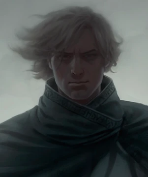
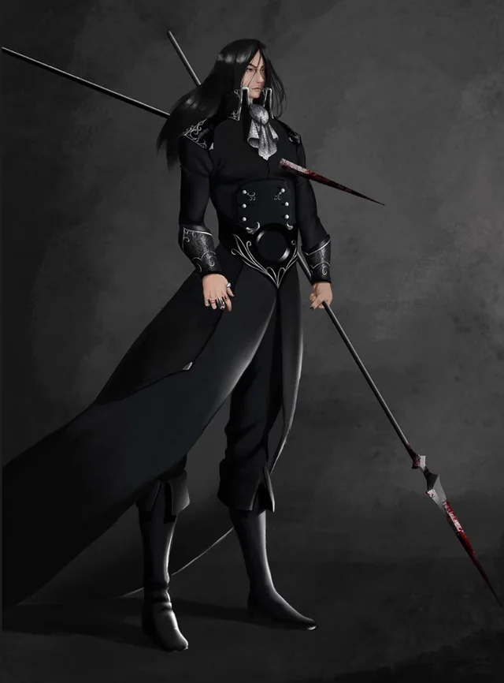
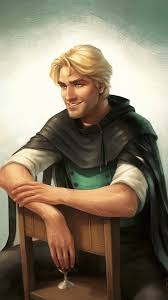

Synopsis
Kelsier, a half-skaa Mistborn who survived the Lord Ruler's most brutal death camp, has the most daring plan in a thousand years: he's going to overthrow the empire. To do this, he recruits a crew of expert thieves and con artists, each with their own Allomantic powers.
Among them is Vin, a teenage street thief who has survived by trusting no one. She discovers she's a Mistborn like Kelsier, and he takes her in, teaching her to use her powers. As the crew executes their increasingly impossible plans, Vin must learn to trust others, discover her own strength, and confront the terrible secrets the Lord Ruler has kept hidden for a millennium.
Key Themes
The story explores what it means to have hope in a hopeless situation. Kelsier becomes a symbol of resistance, showing the skaa that change is possible. The rebellion isn't just about overthrowing a tyrant—it's about proving that ordinary people can stand up to overwhelming power.
Vin's character arc centers on learning to trust others after a lifetime of betrayal. The book examines the difficulty of opening yourself up to others and the strength that comes from genuine relationships. It also explores the cost of deception and the weight of secrets.
The novel questions what people are willing to sacrifice for the greater good. Kelsier's willingness to become a symbol, even at personal cost, contrasts with the Lord Ruler's use of power for oppression. It asks whether the ends justify the means when fighting tyranny.
The stark divide between nobles and skaa provides a commentary on systematic oppression and class struggle. The book explores how long-term subjugation affects people's psyche and the difficulty of breaking free from internalized oppression.
Major Plot Points
-
Kelsier's Crew
Kelsier assembles a crew of specialists: Breeze the Soother, Ham the Thug, Clubs the Smoker, Dockson the coordinator, Spook the scout, and Sazed the Keeper. Each plays a crucial role in the heist to overthrow the Lord Ruler. -
Vin's Transformation
Under Kelsier's mentorship, Vin transforms from a street urchin into a powerful Mistborn. She infiltrates noble society, befriending Elend Venture while gathering intelligence. Her journey is both physical and emotional as she learns what it means to trust and be part of a family. -
The Army of Rebellion
While the crew works on their heist, they also organize and train a secret army of skaa warriors. They spread rumors about the Survivor of Hathsin, turning Kelsier into a legend that inspires the common people to believe rebellion is possible. -
The Lord Ruler's Secret
The crew discovers that the Lord Ruler is not simply a powerful Allomancer—he's also a Feruchemist, allowing him to compound his powers and achieve near-immortality. This revelation forces them to rethink their entire approach to defeating him. -
The Final Confrontation
In a climactic battle, Kelsier faces the Lord Ruler and seemingly dies, becoming a martyr and rallying symbol for the rebellion. But Vin discovers the key to the Lord Ruler's power and, with Marsh's help (via Hemalurgy), finally defeats the immortal tyrant who has ruled for a thousand years. The Final Empire falls, but the crew quickly realizes that the Lord Ruler may have been holding back greater dangers.
Key Characters
Vin
The protagonist who discovers her Mistborn abilities and
transforms from a mistrustful thief into a hero. Her relationship
with Kelsier and later Elend shape her growth.

Kelsier
The charismatic leader of the rebellion, known as the Survivor of
Hathsin. His infectious optimism and bold planning inspire
everyone around him to attempt the impossible.

Elend Venture
A nobleman who reads philosophy and dreams of a better world. His
unlikely friendship with Vin complicates her mission but also
shows that not all nobles are evil. tries to build a new
government.

Sazed
A Terrisman steward and Keeper who becomes Vin's teacher and
friend. His vast knowledge and Feruchemical abilities prove
invaluable to the crew.

Lord Ruler
The immortal god-emperor who has ruled for a thousand years. His
true identity and the secrets of his power are central mysteries
that drive the plot.

Marsh
Kelsier's older brother and a Seeker who leads the rebellion's spy
network among the Steel Ministry. His infiltration of the
Inquisitors has deadly consequences.
